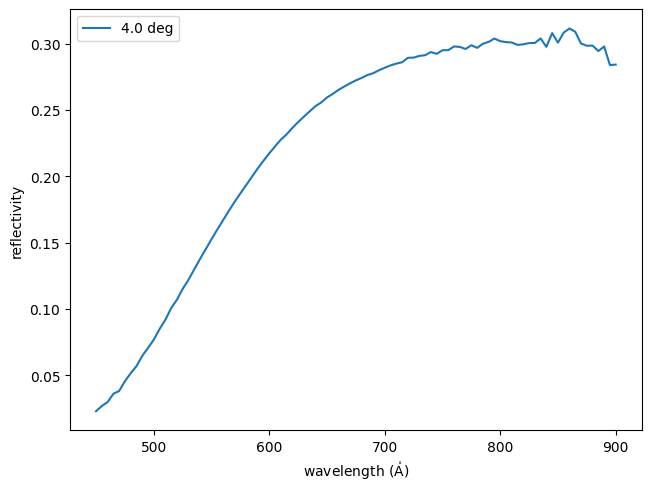

multilayer_witness_measured#
- esis.flights.f1.optics.primaries.materials.multilayer_witness_measured()[source]#
Load the reflectivity measurement of the witness samples.
Examples
Load the measurement and plot it as a function of wavelength
import matplotlib.pyplot as plt import astropy.visualization import named_arrays as na from esis.flights.f1.optics import primaries # Load the witness sample measurements multilayer = primaries.materials.multilayer_witness_measured() meas = multilayer.efficiency_measured # Plot the measurement as a function of wavelength with astropy.visualization.quantity_support(): fig, ax = plt.subplots(constrained_layout=True) na.plt.plot( meas.inputs.wavelength, meas.outputs, ax=ax, label=meas.inputs.direction, ) ax.set_xlabel(f"wavelength ({ax.get_xlabel()})"); ax.set_ylabel("reflectivity"); ax.legend();
- Return type: